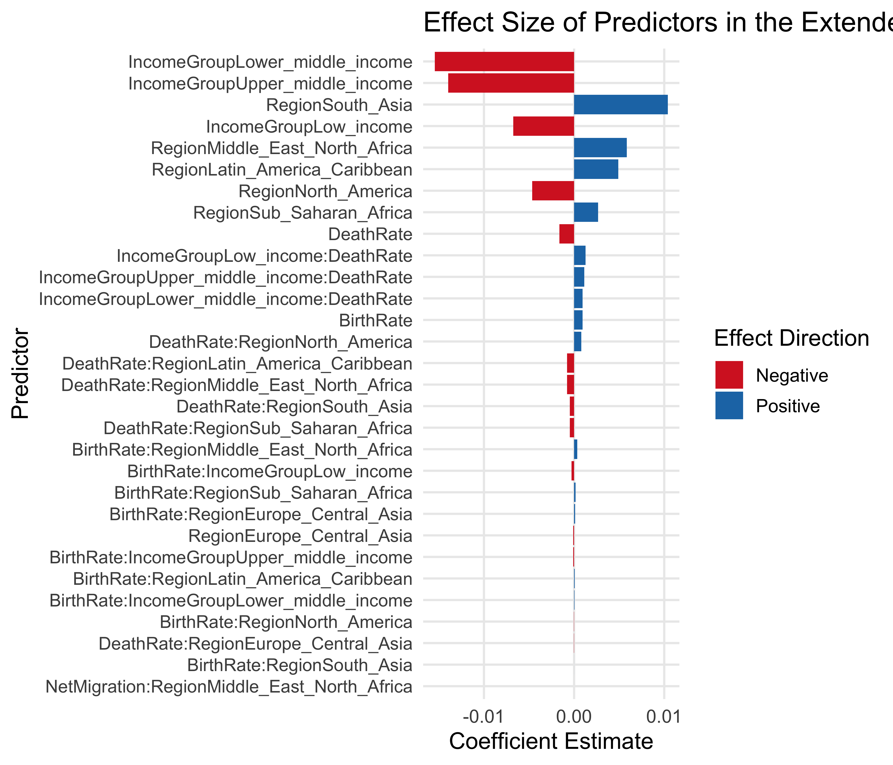
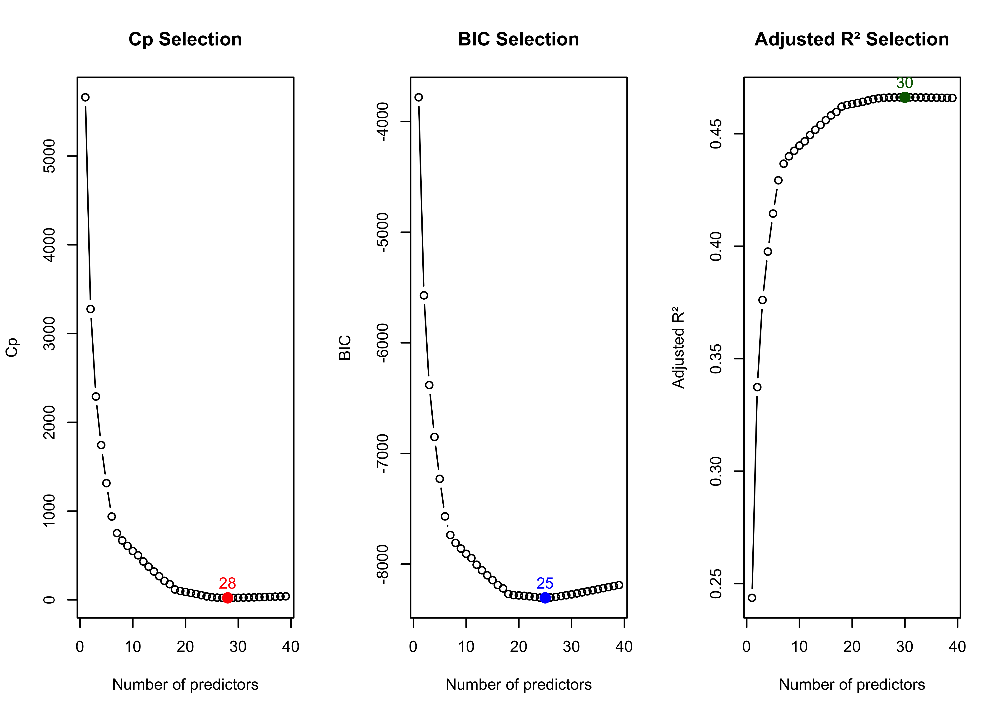

Population Growth by Region
Part II Modeling & Evaluation
Introduction
The goal of this project is to analyze global population dynamics using data from the World Bank and UN, we examine how birth rates, death rates, migration flows, income groups, and regional characteristics to predict population growth across countries.
To measure yearly population growth, we compute the instantaneous growth rate, defined as:
\[ r_t = \ln\left(\frac{N_{t+1}}{N_t}\right) \]
where (N_t) represents the population in year (t).
We then model this growth rate as a function of variables:
\[ r_t = \beta_0 + \beta_1 B_t + \beta_2 D_t + \beta_3 M_t + \beta_4 IG_t + \beta_5 R_t + \epsilon_t \]
This approach allows us to understand birth and death rates, net migration, income level, and region population trends, and to explore differences in demographic patterns across countries and development groups.
Basic Linear Model
The model demonstrates a good overall fit for demographic data. The R-squared value of 0.423 indicates that the model explains about 42% of the variation in population growth rates across countries. The Residual Standard Error (RSE = 0.0138) are small that indicates that the model’s predictions are reasonably accurate and that errors remain well within expected ranges for noisy macro-level population data.
Finally, the model’s F-statistic (830.5, p < 2e-16) indicates that the set of predictors—birth rate, death rate, migration, income group, and region—collectively provide significant explanatory power. Together, these metrics indicate that the model performs well for global demographic analysis.
The residual prediction plots for the baseline model show nonlinear clusters and diagonal patterns in several regions (e.g., North America and Europe & Central Asia). This indicates that trends are not fully captured. While the model reflects the overall direction of growth, the relationship between the predictors and actual outcomes varies considerably across regions, leaving substantial unexplained variability.

In the basic model, the distribution of residuals across regions is centered close to zero. However, several regions such as East Asia & Pacific, Latin America & Caribbean, and Sub-Saharan Africa show wider residual spreads and more extreme outliers. This indicates that the linear specification may not fully capture underlying regional dynamics.
Extended Linear Model with Interaction Terms
To allow the effect of demographic variables to vary across economic and geographical groups, we estimate an extended model that includes interaction terms between birth rates, death rates, migration rates, and the categorical variables Income Group and Region:
\[ r_t = \beta_0 + \beta_1 B_t + \beta_2 D_t + \beta_3 M_t + \beta_4 IG_t + \beta_5 R_t + \beta_6 (B_t \times IG_t) + \beta_7 (D_t \times IG_t) + \beta_8 (M_t \times IG_t) + \beta_9 (B_t \times R_t) + \beta_{10} (D_t \times R_t) + \beta_{11} (M_t \times R_t) + \epsilon_t \]
This extended specification allows the slopes of the demographic variables to differ by income level and region.
| Model | RSE | R2 | AdjR2 | Fstat | P | DF |
|---|---|---|---|---|---|---|
| Basic | 0.0138 | 0.4231 | 0.4226 | 830.5 | 12 | 13589 |
| Ext | 0.0132 | 0.4674 | 0.4659 | 305.2 | 39 | 13562 |
Compared to the basic model, the extended model improves fit (R² increases from 0.423 to 0.467) and reduces prediction error slightly - from 0.01377 to 0.01325.

Subset Selection

This plot summarizes the results of best-subset model selection using three criteria: Cp, BIC, and Adjusted R². All three metrics show improvements as predictors are added, but they level off around 25–30 variables. For next steps I choose the BIC-selected model with 25 predictors for further analysis and forecasting.
Build the final confirmed model

\small| Model | RSE | R2 | AdjR2 | AIC | Pred | DF |
|---|---|---|---|---|---|---|
| Basic | 0.0138 | 0.4231 | 0.4226 | -77956.2 | 12 | 13589 |
| Extended | 0.0132 | 0.4674 | 0.4659 | -78990.6 | 39 | 13562 |
| Reduced | 0.0132 | 0.4668 | 0.4658 | -79001.0 | 25 | 13576 |
\normalsizeThe reduced model maintains nearly the same R² performance as the full extended model (0.4668 vs 0.4674), but reduced model using 14 fewer predictors. Its residual standard error is identical to the extended model.
For better visualization and interpretation, I transform the raw AIC values into an AIC improvement score, defined as the reduction in AIC relative to the basic model: \[ \text{AIC}_{\text{improvement}} = \text{AIC}_{\text{basic}} - \text{AIC} \]
This transformation ensures that the best-performing model has the highest value, making the barplot more intuitive (higher = better).

Train/test split
Before using the model for forecasting, it is important to check whether it actually generalizes beyond the data it was trained on. Because the model was built using many interaction terms and subset selection based on the full dataset, there is a real risk of overfitting—performing well on the training data but poorly on unseen years or countries. To make sure the model’s predictions are reliable and not just capturing noise, I evaluated it on a separate test set and computed its prediction error.
[1] 0.0001522559[1] 0.006939419[1] 0.4359731
The predicted vs actual scatterplots demonstrates that the reduced model generalizes well to unseen years. The model accurately predicting population growth rates for most observations within different regions.

Compared to the baseline model, the reduced model produces tighter residual spreads for many regions, suggesting less noise and more efficient estimates. However, a few regions still show more outliers, likely reflecting country-specific shocks or other local drivers that are not captured even by this dataset. The overall error patterns highlight that regions such as the Middle East & North Africa and Sub-Saharan Africa have wider residual distributions and occasional large deviations. This reflects more volatile or uneven population growth that a linear model struggles to capture. In contrast, regions like Europe and North America display much smaller residual dispersions, indicating more stable and predictable demographic trends that the reduced model can represent more consistently.

Residuals are approximately centered around zero and display no structural pattern, suggesting the model form is good.
Projected Forecast
In this part of the project, we extend our analysis from explaining population growth to forecasting future population sizes. We select a base year and use our regression model to predict each country’s future growth rate over a chosen forecast horizon.
Forecast horizon: the interval between the base year and target year: \[ h = t_f - t_b \] Regression equations with time-shift by ℎ: \[ \hat r_{t+h} = \beta_0 + \beta_1 B_{t_b} + \beta_2 D_{t_b} + \beta_3 M_{t_b} + \beta_4 IG_{t_b} + \beta_5 R \]
\[ N_{t+h} = N_{t_b} \cdot e^{\hat r_{t+h}} \]

The plot shows historical population trends for each global region from 1960 to 2022, followed by a 10-year forecast based on regression-based growth model.
Sub-Saharan Africa shows one of the strongest projected increases. Middle East & North Africa displays the sharpest projected rise. This results from the model assigning relatively high growth rates to this region due to a combination of above-average birth rates, positive region effects, and large positive migration interactions. As a result, forecasted population increases much faster than Europe or North America.
Part III Rolling Window Cross-Validation
Method Overview
We estimate a population-growth forecasting model using the predictor variables
\(B_{t_b}\), \(D_{t_b}\), \(M_{t_b}\), \(IG_{t_b}\), and region \(R\).
The target variable is the future growth rate \(r_{t_f}\).
All model training uses only historical data; future validation years are held out. For each forecast horizon \(h\), the model is trained using a rolling time window. After each step, the window is moved forward to ensure that each prediction mimics a real out-of-sample forecast.
The predicted future growth rate \(r_{t_f}\) is converted to a future population using the baseline population \(N_{t_b}\):
\[ N_{t_f} = N_{t_b}\,(1 + r_{t_f}) \]
Rolling Window Forecasting
Let the initial training window cover the years from \(t_1\) to \(t_b\).
After fitting the model on this window, we generate a forecast for the year
\[ t_f = t_b + h, \]
where \(h \in \{1, 5, 10\}\) is the forecast horizon.
The window is then advanced one step forward:
\[ (t_1,\, t_b) \;\rightarrow\; (t_2,\, t_b + 1) \]
and the model is refit.
Repeating this procedure produces many forecasts for each horizon, which allows a consistent evaluation of accuracy.
Forecast Error Measures
For each forecast, the percent error is defined as:
\[ PE_t = \left(\frac{F_t - N_t}{N_t}\right) \times 100, \]
where
- \(F_t\) = forecasted population
- \(N_t\) = actual population
- \(PE_t\) = percent error for year \(t\)
Precision: Mean Absolute Percent Error (MAPE)
MAPE measures the average magnitude of forecast error, ignoring direction:
\[ \text{MAPE} = \frac{1}{n} \sum_{t=1}^{n} |PE_t|. \]
Bias: Mean Algebraic Percent Error (MALPE)
MALPE preserves the sign of the error, indicating whether the model tends to over- or under-predict:
\[ \text{MALPE} = \frac{1}{n} \sum_{t=1}^{n} PE_t. \]
Interpretation:
- Negative MALPE: model tends to underpredict
- Positive MALPE: model tends to overpredict
These evaluation metrics follow the methodology in Rayer (2008), Population Forecast Errors: A Primer for Planners.
horizon MAPE MALPE
1 1 0.2066207 0.009012327
2 5 2.2592715 0.465496609
3 10 6.1381436 2.075462195The rolling-window evaluation shows that the reduced model performs very well for short-term population growth forecasting. At a one-year horizon, the model achieves MAPE of 0.21%, indicating that predictions closely track actual year-to-year population changes.
As the forecast horizon increases, prediction error grows. The five-year horizon produces a MAPE of 2.26% with modest positive bias. The ten-year horizon shows MAPE of about 6.14% and a MALPE of 2.08. Overall, the model demonstrates strong short-term accuracy and maintains stable long-run behavior, capturing global population growth patterns with relatively low error even up to a decade ahead.